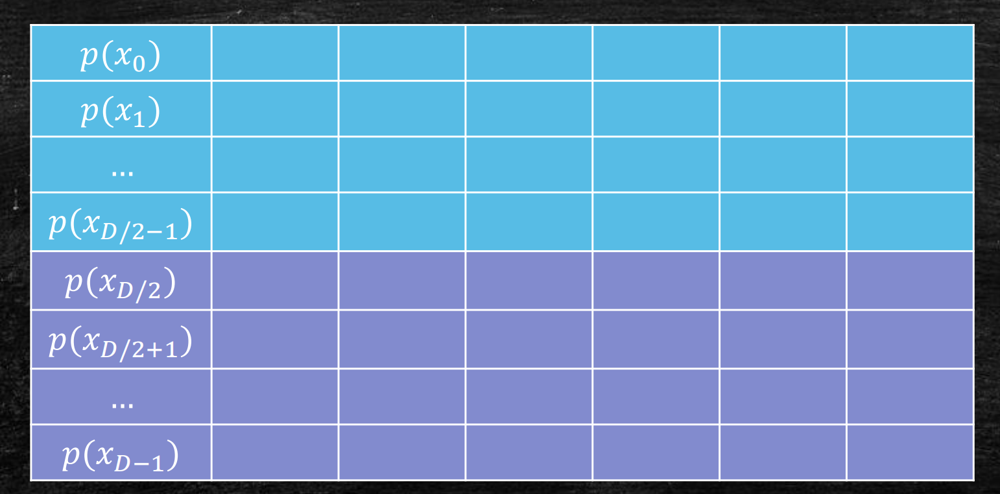

Last updated on May 5, 2025 pm
本文介绍了多项式乘法的快速傅立叶变换算法，分为插值、乘法、恢复三个步骤，将乘法的时间复杂度降到O(nlogn)。
我们之前提到，要想将大整数乘法的时间复杂度降低到O(nlogn)，可以采用快速傅立叶变换（Fast Fourier Transform，FFT）。这次，我们从一个类似的问题——多项式乘法入手，学习这个神奇的算法。
多项式乘法
基本问题
给定两个d−1阶多项式p(x)和q(x)，我们要计算他们的乘积r(x)=p(x)q(x)。
每个d−1阶多项式都可以表示为一个d维向量。设
- p(x)=∑i=0d−1aixi→(a0,a1,…,ad−1)
- q(x)=∑i=0d−1bixi→(b0,b1,…,bd−1)
那么，我们就是要计算r(x)=∑i=02d−2cixi的系数ci=∑k=0iakbi−k。
朴素算法的时间复杂度为O(d2)，因为我们要计算系数的两两乘积再相加。所以，我们应该比O(d2)做得更好。
回想Karatsuba算法
如何改进？我们可以回想大整数乘法的Karatsuba算法。在这里，我们尝试类似的算法。
假设d是2的整数次幂，我们先将p(x)写成
p(x)=p1(x)+p2(x)⋅x2d
其中
p1(x)=a0+a1x+⋯+a2d−1
p2(x)=a2d+a2d+1x+⋯+ad−1x2d−1
这里p1(x)相当于大整数乘法中的低位，p2(x)相当于大整数乘法中的高位。
类似地，我们将q(x)写成
q(x)=q1(x)+q2(x)⋅x2d
从而有
r=p1q1+(p1q2+p2q1)x2d+p2q2xd
让我们应用Karatsuba算法！我们要计算p1q1、p2q2、p1q2+p2q1，但并不需要计算四次乘法，因为p1q2+p2q1可以由下式得到。
p1q2+p2q1=(p1+p2)(q1+q2)−p1q1−p2q2
这样，我们只需要计算三次乘法，即计算
- p1q1
- p2q2
- (p1+p2)(q1+q2)
于是，我们把一个规模为d的乘法问题，分解为了三个规模2d的乘法问题，也就是
T(n)=3T(2d)+O(d)⇒T(n)=O(nlog23)
与大整数乘法的联系和区别
你一定发现了，多项式乘法和大整数乘法联系紧密。例如，
可以看出，大整数乘法似乎就是x=10的多项式乘法。但是，他们也有区别！
主要的区别是进位，多项式乘法中不存在大整数乘法中的进位，这会简化我们的问题。
事实上，我们今天使用多项式乘法来讲解FFT，主要就是为了避免进位问题。
插值定理
我们先做一些准备工作。为了表示一个多项式，我们可以它的系数表示，也可以用它曲线上的几个点表示。这就是多项式插值的想法。
那么，要几个不同的点才能确定一个多项式呢？我们从简单情况考虑，确定一条直线需要2个点，确定一条抛物线需要3个点。由此我们猜测，需要 d 个不同的点 (x0,p(x0)),(x1,p(x1)),…,(xd−1,p(xd−1)) 来唯一确定一个 d−1 维多项式。
- 插值定理：给定d个点(x0,y0),(x1,y1),…,(xd−1,yd−1)，其中对任意i=j都有xi=xj，那么存在一个唯一的不超过d−1阶的多项式p(x)，使得对每个i都有p(xi)=yi。
我们可以用线性代数的知识证明这个定理。设p(x)=∑t=0d−1atxt，那么我们有yi=∑t=0d−1atxit，即
y0y1⋮yd−1=11⋮1x0x1⋮xd−1x02x12⋮xd−12⋯⋯⋱⋯x0dx1d⋮xd−1da0a1⋮ad−1
我们想要证明，满足等式的a=(a0,a1,…,ad−1)是唯一的。
注意到，中间的方阵是一个范德蒙德矩阵，其行列式等于∏0≤i<j≤d−1(xj−xi)。又因为xi=xj，因此行列式不为零，即该矩阵可逆，从而满足等式的a有唯一解。
FFT的整体框架
FFT的核心思路就是我们刚才说的多项式插值，其算法主要分为以下三步：
-
插值：选取2d−1个不同的数x0,x1,…,x2d−2，计算
- p(x0),p(x1),…,p(x2d−2)
- q(x0),q(x1),…,q(x2d−2)
-
乘法：对于每个i=0,1,…,2d−2，计算 r(xi)=p(xi)q(xi)。这其实获得了r(x)的插值(x0,r(x0)),(x1,r(x1)),…,(x2d−2,r(x2d−2))。
-
恢复：从前一步获得的插值中恢复出r(x)=∑i=02d−2的系数(c0,c1,…,c2d−2)。
整个FFT的过程相当于“用插值绕了一圈”，主要的目的是将乘法的次数从 d2 次减少到 2d−1 次，因为我们只需要完成2d−1个整数乘法。这样，我们期望能降低整体的时间复杂度。
步骤一：插值
要想在O(dlogd)时间内做完多项式乘法，就要求每一步的时间复杂度不超过O(dlogd)。我们先来看第一步——插值。
最简单的想法
最直接的做法是，随意找2d−1个点x0,x1,…,x2d−2，再分别算出p(x0),p(x1),…,p(x2d−2) 和 q(x0),q(x1),…,q(x2d−2)
假设我们能在O(1)时间内算出xd，那么算出每个p(xi)或q(xi)需要O(d)的时间，而我们一共要算4d−2个。因此，总时间复杂度为O(d2)。这显然是不让人满意的，因为我们要求每一步都要在O(dlogd)以内完成。
那么，我们可以用分治法做得更好吗？
引入分治法
我们首先做一些规定和假设。令D=2d−1，并假设D是2的整数次幂（因为我们将会对D分治）。假设我们能在O(1)的时间内算出xd。
回到正题，我们如何能加快插值的速度呢？目前的时间花销来源是，要计算O(d)个p(xi)或q(xi)，而每个需要花费O(d)时间。所以，我们有两种优化思路：
- 内部优化：用分治法更快地算出单个p(xi)
- 协同优化：在算不同的p(xi)时分治
内部优化的尝试
首先，我们尝试内部优化的思路。为了用分治法更快算出p(xi)，我们将p(xi)分成高位和低位，即
p(xi)=p1(xi)+p2(xi)⋅x2D
然后，我们分别递归地求出p1(xi)和p2(xi)。
相信你已经意识到，这样做不可能降低时间复杂度。验证一下，我们有
T(D)=2T(2D)+O(1)⇒T(D)=O(D)
这和直接计算没有区别，因为我们只是改变了计算顺序，并没有减少任何计算。事实上，将xi代入多项式求值的过程并没有什么优化空间。
协同优化的尝试
我们尝试在计算不同的p(xi)时使用分治。如果简单地将D个p(xi)分成两半，再递归地计算每一部分，这不会和之前有任何区别，因为不同的p(xi)之间毫无关系，我们无法减少任何计算。

- 不同的p(xi)之间没有关联，我们要单独算O(D)个p(xi)；
- 单个p(xi)的各项之间没有关联，我们要单独算D个单项式的值。
这么看，我们对这个O(d2)的算法根本无法优化！
单次求多值
让我们再仔细思考一下。计算每个p(xi)需要O(D)的时间，这确实无法优化，因为多项式的系数并不由我们决定，我们只能逐项代入计算。
但是计算不同的p(xi)呢？刚才我们说，不能优化是因为不同的 p(xi) 之间没有关联。但其实，这D个点只是要求出r(x)的系数，选择什么点完全取决于我们！
那么，能不能通过选取特殊的 x0,x1,…,xD−1 来减少计算呢？例如，选取x1=1和x2=−1，我们能不能同时计算p(x1)和p(x2)？
奇偶分治
以x1=1和x2=−1为例，我们观察到
- p(1)=a0+a1+a2+a3+⋯
- p(−1)=a0−a1+a2−a3+⋯
这么看，我们可以分开计算奇数项和偶数项，再分别相加和相减，就能同时得到p(xi)和p(−xi)！也就是说，我们用d次运算解决了原来2d次的计算！
更一般地，我们有如下奇偶分治的思路：设
p(x)=pe(x2)+x⋅po(x2)
其中
pe(x)=a0+a2x+a4x2+⋯+aD−2x2D−2
po(x)=a1+a3x+a5x2+⋯+aD−1x2D−2
我们选择互为相反数的x1和x2，那么有
pe(x12)=pe(x22)andpo(x12)=po(x22)
进而有
p(x1)=pe(x12)+x1⋅po(x12)
p(x2)=pe(x22)+x2⋅po(x22)
原本我们计算p(x1)和p(x2)，需要计算pe(x12),po(x12),pe(x22),po(x22)这4项，但现在，我们只需要计算2项。也就是说，我们原先将2个规模为D的问题，分解为4个规模2D的问题，而现在，我们只需要分解为2个规模2D的问题！
分治法思路
这样，我们就设计出了一种基本的分治算法。
-
选择 x0,x1,…,xD−1，使得 x0=−x1,x2=−x3,…,xD−2=−xD−1。
-
划分：分别计算奇部分和偶部分。
-
pe(x02),pe(x22),…,pe(xD−22)
-
po(x02),po(x22),…,po(xD−22)
-
合并：计算 p(xi)=pe(xi2)+xi⋅po(xi2)。
这样，我们每次就将计算D个D阶p(x)的问题，转换为了计算D个2D阶p(x)的问题，即分解为了2个“计算2D个2D阶p(x)的问题”。如果T(D)表示计算D个D阶的p(x)的时间代价，那么我们有
T(D)=2T(2D)+O(D)⇒T(D)=O(DlogD)
这似乎非常巧妙。但这个算法中存在着很大的问题。
引入复数
分治法中的问题
请注意，我们的算法是否能够递归调用。在第一轮中，我们取了互为相反数的整数，如x0=−x1,x2=−x3等。但在第二次调用中，要代入的整数变为了x02,x22,x42,…，全部是正数，无法再次采用相反数的性质进行递归。

因此，为了让我们的递归进行下去，就要保证每次要代入的整数都两两互为相反数。而想要让x02=−x22，我们必须引入复数。
复数基础复习
复数有三种基本的表示形式
-
直角坐标：z=a+bi，其中a为实部，b为虚部，i=−1为虚数单位。
-
极坐标：z=r(cosθ+isinθ)，其中r是向量(a,b)的长度，θ是向量(a,b)与实轴的夹角。
-
指数形式：z=r⋅eθi=r(cosθ+isinθ)，由欧拉公式可得。
接下来，我们都采用指数形式表示复数，并且默认r=1，因为我们在FFT中只会用到r=1（即单位圆上）的复数。
-
复数的平方：eθi的平方是e2θi，只需要把eθi旋转角度θ。
-
复数的相反数：互为相反数的复数关于原点中心对称（图中两个红色向量），并且平方相等。
(e(θ+π)i)2=e2θi⋅e2πi=e2θi=(eθi)2
- 复数的平方根：eθi的平方根是e2θi和e(2θ+π)i。
用复数实现递归
有了复数，我们如何解决刚才的问题？也就是，如何让平方后的数还两两互为相反数？
我们先考虑原先有4个数的情况，即怎么样取这4个数，才能让他们平方后得到的2个数仍然是相反数？不难想到，可以取单位圆与坐标轴的四个交点（或者说从实轴正方向起取单位圆的四等分点），即
x0=1,x1=−1,x2=i,x3=−i
这样平方后，有
x02=1,x22=−1
仍为相反数。
类似地，考虑 D=8 的情况，我们取从实轴正方向起取单位圆的八等分点，即
ω0=1,ω1=e4πi,ω2=e2πi,ω3=e43πi
ω4=eπi,ω5=e45πi,ω6=e23πi,ω7=e47πi

可以验证，这8个数平方后得到的4个数两两互为相反数，这4个数平方后得到的2个数仍两两互为相反数。这样，我们分治法中的递归就可以进行了。
那么一般地，对于任意的D，我们如何找到起始的D个点呢？
和之前一样，从实轴正方向起取单位圆的 D 等分点。设 ω=eD2πi，那么我们就取ω0,ω1,ω2,…,ωD−1。可以看到我们只需要一个参数 ω 来表示 D 个点。
那么在下一阶段，要计算的点就变为了 ω0,ω2,ω4,…,ωD−2。也就是说，我们可以用 ω2 来表示下一阶段的所有点。
插值整体算法
至此，我们得到了第一步——插值的整体算法。
给定一个D−1阶多项式 p 和 ω=eD2πi。
-
基本情况：如果 ω=1，此时问题规模D=1，直接返回 p(1)。
-
由 p(x)，构造偶多项式 po(x) 和奇多项式 pe(x)。
-
对 po(x) 和 pe(x)，分别在点 ω0,ω2,…,ωD−2 上递归计算。
-
依次合并 D 个点的运算结果，即
p(ωt)=pe(ω2t)+ωt⋅po(ω2t)
设 T(D) 表示计算 FFT(p, ω) 的时间复杂度，其中 p 的阶数为 D−1。之前已经分析过，我们有
T(D)=2T(2D)+O(D)⇒T(D)=O(DlogD)
所以，插值这一步的时间复杂度 T(D)=O(dlogd)。

步骤二：乘法
在这一步中，我们要对每个 xi(0≤i≤2d−2)，计算 r(xi)=p(xi)q(xi)。
当我们完成了插值，这一步是简单的，我们只需要做 2d−1 次数值乘法即可，故乘法这一步的时间复杂度为 O(d)。
步骤三：恢复
第三步，我们需要从 2d−1 个 (xi,r(xi)) 中，恢复出 r(x) 的系数 (c0,c1,…,c2d−1)。
最简单的想法
恢复其实是插值的逆过程，本质上是要解如下的方程。
r(1)r(ω)r(ω2)⋮r(ωD−1)=111⋮11ωω2⋮ωD−11ω2ω4⋮ω2(D−1)⋯⋯⋯⋱⋯1ωD−1ω2(D−1)⋮ω(D−1)(D−1)c0c1c2⋮cD−1
我们已知 (1,r(1)),(ω,r(ω)),(ω2,r(ω2)),…,(ωD−1,r(ωD−1))，其中 ω=eD2πi，现在要求系数 (c0,c1,…,cD)。
令
A=111⋮11ωω2⋮ωD−11ω2ω4⋮ω2(D−1)⋯⋯⋯⋱⋯1ωD−1ω2(D−1)⋮ω(D−1)(D−1)
那么，最简单的想法是
c0c1c2⋮cD−1=A−1r(1)r(ω)r(ω2)⋮r(ωD−1)
即直接解矩阵方程，或者说求 A−1。
但是，这种做法的时间复杂度是 O(D3)，这是我们不可接受的。
因此，我们需要利用 A 矩阵的特殊性质，来更快地解出方程。
复矩阵基础复习
-
复数的共轭：z=a+bi 的共轭复数是 zˉ=a−bi。
-
复向量的内积：两个复向量 a,b∈Cn，它们的内积定义为
⟨a,b⟩=j=1∑naj⋅bj
-
复向量的正交：如果 ⟨a,b⟩=0，那么 a 和 b 是正交的。
-
复向量的标准正交：如果 ⟨a,b⟩=0，且 ⟨a,a⟩=⟨b,b⟩=1，那么 a 和 b 是标准正交的。
-
酉矩阵（标准正交复矩阵）：如果复方阵 A 的任意两列都标准正交，那么 A 是酉矩阵（标准正交复矩阵）。
-
复矩阵的共轭转置：复矩阵 A 的共轭转置 A∗，定义为 (A∗)i,j=Aj,i。
举个例子，比如
A=(abcd)A∗=(acbd)
- 酉矩阵的重要性质：如果 A 是酉矩阵，那么 A 可逆，且 A−1=A∗。
接着上面的例子，如果 A 是酉矩阵，那么
AA∗=(abcd)(acbd)=(1001)
因此我们发现，如果 A 是一个酉矩阵，那么求它的逆矩阵会非常方便。
A矩阵的性质
那么我们会想去验证，恢复步骤中的 A(ω) 矩阵是一个酉矩阵吗？
还记得，
A=111⋮11ωω2⋮ωD−11ω2ω4⋮ω2(D−1)⋯⋯⋯⋱⋯1ωD−1ω2(D−1)⋮ω(D−1)(D−1)
注意到，ωω=1，ωD=e2πi=1。
首先验证正交性。挑选两列，
ci=(1,ω,ω2,…,ωD−1)
cj=(1,ω2,ω4,…,ω2(D−1))
那么有
⟨ci,cj⟩=1+ω+ω2+⋯+ωD−1=0
一般地，对于任意不同的两列 ci,cj，
⟨ci,cj⟩=k=1∑Dω(k−1)(i−1)ω(k−1)(j−1)=k=1∑Dω(k−1)(j−i)=1−ωj−i1−ω(j−i)D=0
再验证标准性。但是，A 矩阵明显不满足标准性（即每一列和自己的内积为1），因为第1列为全1。
事实上，对任意一列 ci，我们有
⟨ci,ci⟩=k=1∑Dω(k−1)(i−1)ω(k−1)(i−1)=D
因此，A 矩阵并不是酉矩阵！但是，我们可以通过缩放来使得它标准正交。
我们已经计算过，A(ω) 矩阵不同的两列内积为0，相同的两列内积为D。可以猜测，D1A(ω) 应该是标准正交的！以下是对于这个命题的证明，可以跳过。
命题：矩阵D1A(ω) 对于 ω=eD2πi 是标准正交的
证明：设 ci,cj 是 D1A(ω) 的任意两列，那么有
⟨ci,cj⟩=k=1∑DD1ω(k−1)(i−1)ω(k−1)(j−1)=D1k=1∑Dω(k−1)(j−i)
⟨ci,cj⟩=D1k=1∑Dω0=1
⟨ci,cj⟩=D1k=1∑Dω(k−1)(j−i)=D11−ωj−i1−ω(j−i)D=0
因此， D1A(ω) 是标准正交的。
接下来，我们要求 A(ω)−1。简单来说，由于
A(ω)A(ω)∗=DI
因此
A(ω)−1=D1⋅A(ω)∗=D1⋅A(ω−1)
由于 A 对称，转置后不变。又 ω=ω−1，故 A 的共轭转置 A(ω)∗=A(ω−1)。
当然，我们还可以严谨地证明，此部分可以跳过。
A(ω)−1==(D⋅D1⋅A(ω))−1=D(D1⋅A(ω))−1D(D1⋅A(ω))∗=D1A(ω)∗
因此，
(A(ω)−1)i,j=D1(A(ω)−1)j,i=D1⋅ω−(i−1)(j−1)=D1(ω−1)(i−1)(j−1)
也就是说，
A(ω)−1=D1⋅A(ω−1)
因此，
A−1=D1⋅111⋮11ω−1ω−2⋮ω−(D−1)1ω−2ω−4⋮ω−2(D−1)⋯⋯⋯⋱⋯1ω−(D−1)ω−2(D−1)⋮ω−(D−1)(D−1)
恢复整体算法
现在，我们就得到了
c0c1c2⋮cD−1=D1⋅111⋮11ω−1ω−2⋮ω−(D−1)1ω−2ω−4⋮ω−2(D−1)⋯⋯⋯⋱⋯1ω−(D−1)ω−2(D−1)⋮ω−(D−1)(D−1)r(1)r(ω)r(ω2)⋮r(ωD−1)
然而，直接计算这个矩阵乘法仍然需要 O(D2) 的时间，我们还是不能接受。
该如何改进呢？我们发现，现在要做的事情和第一步很类似。我们都是在求一个多项式在 D 个点处的值，只不过现在的多项式是
s(x)=r(1)+r(ω)⋅x+r(ω2)⋅x2+⋯+r(ωD−1)⋅xD−1
而现在的 D 个数分别是 ω0,ω−1,ω−2,…,ω−(D−1)。
这可以使用第一步的分治法吗？
现在和第一步的区别是：在第一步中，我们选择了 D 个很好的数 ω0,ω1,…,ωD−1，而在第三步中，我们无法选择数字，现在的数字就是 ω0,ω−1,ω−2,…,ω−(D−1)。
那么，这 D 个数是否也很好呢？也就是说，它们是否有平方后两两互为相反数的良好性质，使得我们的递归可以很好进行下去呢？
直观上看，是有的。因为我们在第一步在单位圆上取 D 等分点，采取了顺时针方向；而这次，采用的是逆时针方向，当然能取到完全相同的点。也就是说，(ω0,ω1,…,ωD−1) 和 (ω0,ω−1,ω−2,…,ω−(D−1)) 只有旋转的方向不同。
所以，我们可以直接调用第一步中的函数 FFT(s,ω−1)！从而，恢复步骤的时间复杂度也为 O(dlogd)。
整体算法与时间复杂度分析
至此，快速傅立叶变换的三个步骤已经全部设计完成！
让我们把它们组装起来：

- 插值（第1～4步）：计算 D 和 ω，再计算出 ωi 对应的函数值 p(ωi) 和 q(ωi)。
- 乘法（第5步）：对每个点，计算 r(ωi)=p(ωi)q(ωi)。
- 恢复（第6～9步）：利用 r(ωi) 结合 FFT 函数，解出 r(x) 的系数。
总的时间复杂度为：
O(dlogd)+O(d)+O(dlogd)=O(dlogd)